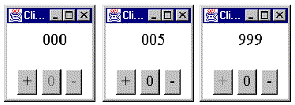

As well as constructing the ClickCounter so that it can be executed by a Web browser it is also possible to include a main() method in the ClickCounterTranslation class declaration which allows it to be run as a stand alone application. A minimal main() method is as follows.
0120 public static void main( String args[]) {
0121
0122 Frame frame = new Frame("Click Counter Demo");
0123 ClickCounterTranslation theInterface
0124 = new ClickCounterTranslation();
0125
0126 theInterface.init();
0127 frame.add( theInterface, "Center");
0128
0129 frame.setVisible( true);
0130 frame.setSize( frame.getPreferredSize());
0131 } // End main.
0132
0133 } // End class ClickCounterTranslation.
The prototype of the main() method, as given on line 0120, has to be strictly adhered to in order for the Java run time system to find and execute it. When the ClickCounter was run as an applet it was executed within a browser which isolated it from the host's windowing system. When it is run as a stand alone application it needs to be able to interact with the host windowing system directly. To allow this to happen a ClickCounterTranslation instance has to be installed within a Frame component.
The implementation of the main() method declares and initializes an instance of the Frame class called frame and an instance of the ClickCounterTranslation class called theInterface. The init() method which was called automatically by the browser when it was run as an applet now has to be called explicitly from the main() method to initialize the interface.
The default layout style of the Frame class is BorderLayout, as will be explained in Chapter 2, and theInterface is added to its "Center" location before the frame.setVisible() method is called to post the application to the display. Once posted the frame.setSize() method must be called, specifying the frame's preferred size, as advised by the frame.getPreferredSize() method, in order for the window to be guaranteed just large enough to display the application. Figure 1.15 shows the ClickCounterTranslation running as a stand alone applet with window borders and controls supplied by its Frame.

Figure 1.15 The ClickCounter
applet in minimal, counting and maximal
states, running under Windows '95.